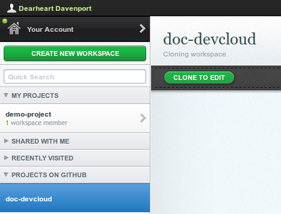
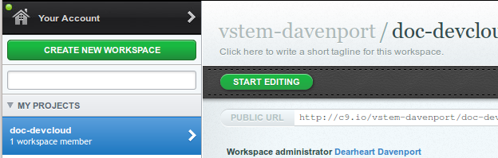
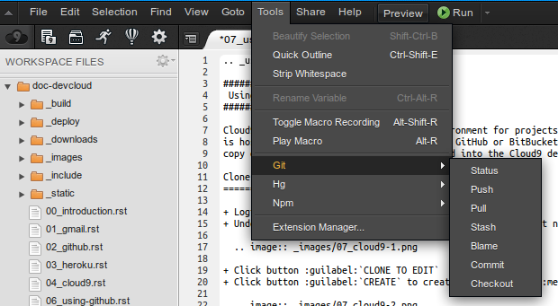
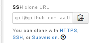

Note
The Cloud9 editor has a simple command line space at the bottom, as well as a complete Linux console terminal. The Firefox web browser will not paste into a Cloud9 terminal session. When using cut-and-paste to execute commands, paste into the editor command line instead.
Cloud9 is a virtual Linux development environment for projects. Project code is hosted on a remote repository at either GitHub or BitBucket, and a working copy of a project repository will be cloned into the Cloud9 development space.
Login to your Cloud9 session at https://c9.io/.
Under PROJECTS ON GITHUB, click a project name.
Click button CLONE TO EDIT.
Click button CREATE to create a workspace in MY PROJECTS.
Click button START EDITING; the Cloud9 edit space will display.
Double-click a document name in the left-hand file list to edit the document.
The clever developers at Cloud9 have integrated many functions into the workspace menu. For example, Git functions can be run from there:

Missing from the Git menu selections is the git add . command. Fortunately there is an embedded command line at the bottom of the Cloud9 workspace where one can type in commands.
In Cloud9, common git commands can be performed from the Tools ‣ Git menu. For information on common git command syntax and usage, please see section Git Version Control.
When a repository is a fork of a master, changes to the master can be updated to the fork as follows. First, an upstream remote must be added:
git remote add upstream {_remotename_}
Note
The {_remotename_} entry is made up of git@github.com:{_username_}/{_projectname_}.git for Github repositories. For example, the remote URL for AAltsys development documentation is: git@github.com:aaltsys/doc-develop.git. When viewing a repository, the bottom of the right-side menu displays the remote URL and a button to copy the URL to the clipboard, as shown in the following image.
Then pull upstream remote changes to synchronize with the local repository:
git commit -a -m "commit current changes"
git pull upstream master
Finally, refresh the file tree view in cloud9 to show new or changed files.